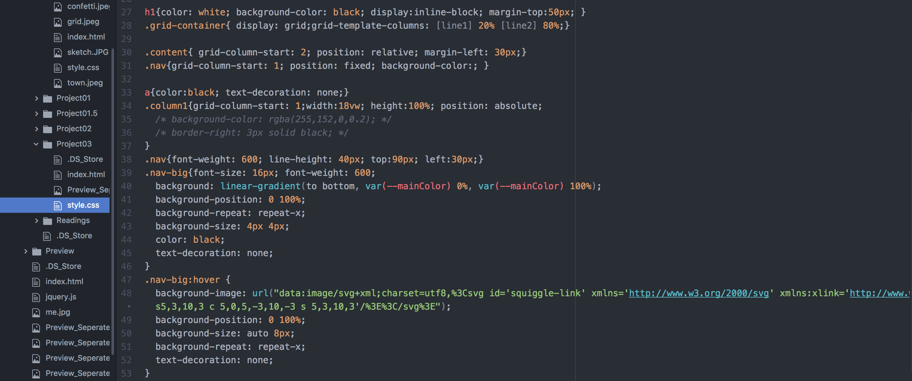

Sophia Tseng
Web Design
Web Programming / 2019
I've always wanted to learn coding, so over this winter semester I took a Web Design course from the Graphic Design department. The following are two of the projects selected from my course works, and this portfolio website is coded by me as well!
My ID Card Swipe
Brief: Choose a span of time, gather data of your choice, and create a multi-page website to represent data and time. Incorporate at least one interactive element using jQuery / JavaScript.
Concept
Campus buildings requiring Student ID cards to gain access makes it seem like my acitivities are under surveillance, but on the other hand, activities without ID card swipes are a total mystery (almost), which I find super intersting! I made this website out of curiosity that how much a viewer can puzzle up with only data from my ID card swipe (and some hints from generous me).
Top of the World
Brief: Choose a song and express it using HTML & CSS.
Concept
The song that I've chosen is "Top of the World" by The Carpenters. The lyrics is about how 'love' brings joy to life and makes the smallest things extraordinary. My interpretation is that through interacting with the web, the colors gradually show, and as the colors show, the page becomes more and more lively, just like a spirit nourished by love.